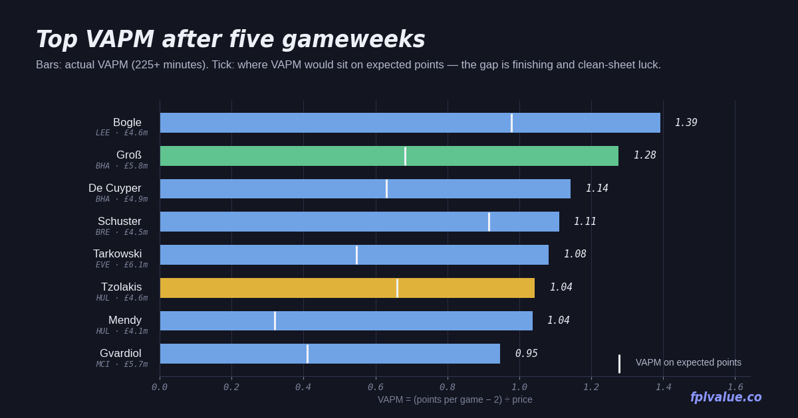

Five gameweeks in: the break is a good time to take stock
No Premier League football for three weeks, which is the first real chance to look at the season without a deadline breathing down your neck. Five gameweeks is still a small sample, but it is big enough that the leaders in the value tables are no longer flukes. Minimum 225 minutes (half the available time) throughout; the GW4 report used 180. Definitions on the metrics page.

Scorecard: the GW4 calls
Last week's column made a handful of specific claims. GW5 points only.
| Call | Player | GW5 pts | GW5 xPts | Verdict |
|---|---|---|---|---|
| Buy | Bogle LEE | 5 | 3.2 | Fine. Clean sheet in a 0–0 at home to Palace; price has risen to £4.6m as predicted. |
| Hold | Groß BHA | 14 | 6.5 | Right, again over-delivering. 3–0 against Arsenal; now the highest-scoring player in the game. |
| Buy | Isak LIV | 8 | 7.1 | Right. Scored the winner at Bournemouth; four goals in five since the GW3 call. |
| Buy | Barry EVE | 6 | 4.1 | Finally. An assist in a 1–0; still the best xGI of any forward under £7m. |
| Buy | Thiago BRE | 5 | 4.0 | Half-right. Returned in a 3–0 but still only one goal from 3.29 xGI all season. |
| Differential | Le Fée SUN | 5 | 3.6 | Meh. Assist in the 5–3 at City, then a 3-week break before the swing starts. |
| Alternative | Tavernier BOU | 2 | 2.6 | Blank. Bournemouth lost 0–1 to Liverpool; 31 points on the season is still the case. |
| Hold | Hull defence | 0–6 | 0–7.2 | Wrong. Conceded twice at Newcastle; Ajayi and Egan scored 1 each, Tzolakis 6 from saves. |
Four of eight right, and this time the ones that were right were the underlying-numbers calls (Isak, Barry, Groß) rather than the defensive ones. The Hull call is the interesting one: three weeks ago this column said fade them, last week it said hold them because they kept beating the model, and the week you flip is the week they concede. That is exactly what regression to the mean looks like from the inside, and a reminder that the xGC numbers were right the whole time even when the points said otherwise.
Top VAPM 225+ minutes
| Player | Pos | Price | PPG | VAPM | Pts | xPts | Δ | Own |
|---|---|---|---|---|---|---|---|---|
| Bogle LEE | DEF | £4.6m | 8.40 | 1.39 | 42 | 32.5 | +9.5 | 6.7% |
| Groß BHA | MID | £5.8m | 9.40 | 1.28 | 47 | 29.8 | +17.2 | 27.4% |
| De Cuyper BHA | DEF | £4.9m | 7.60 | 1.14 | 38 | 25.4 | +12.6 | 27.1% |
| Schuster BRE | DEF | £4.5m | 7.00 | 1.11 | 21 | 18.4 | +2.6 | 0.3% |
| Tarkowski EVE | DEF | £6.1m | 8.60 | 1.08 | 43 | 26.7 | +16.3 | 15.7% |
| Tzolakis HUL | GKP | £4.6m | 6.80 | 1.04 | 34 | 25.2 | +8.8 | 12.3% |
| Mendy HUL | DEF | £4.1m | 6.25 | 1.04 | 25 | 13.3 | +11.7 | 6.3% |
| Gvardiol MCI | DEF | £5.7m | 7.40 | 0.95 | 37 | 21.7 | +15.3 | 26.5% |
| Schade BRE | MID | £6.2m | 7.80 | 0.94 | 39 | 26.2 | +12.9 | 10.6% |
| Vuskovic BHA | DEF | £5.0m | 6.40 | 0.88 | 32 | 20.4 | +11.6 | 3.5% |
Bogle is still first, but the gap has closed and the secret is out: ownership has more than doubled (2.8% → 6.7%) and the price has ticked up. His xPts of 32.5 is the best of any defender in the game, so this is not a Hull-style mirage. He is simply the best-value player available and will stay that way until Leeds' fixtures turn.
Groß is the story of the week. 47 points is the most of anyone, from a £5.8m midfielder, with a +17.2 gap over expected that is the largest in the game. The honest reading is that roughly a third of his points are over-performance and he should be a 6-PPG player, not a 9-PPG one. The equally honest reading is that a 6-PPG £5.8m midfielder is still a top-three value pick, and Brighton have the best attack in the league by xG. Hold, and don't be surprised by a quieter month.
Schuster is the new name. Three starts for Brentford since coming into the side, 21 points, 14 of them in GW5 (goal, clean sheet, bonus). Owned by 0.3% of managers at £4.5m. The sample is tiny and the GW5 haul inflates everything, but the underlying 18.4 xPts over three games (6.1 per game) is a real number for a £4.5m defender, and Brentford's defence is fourth-best in the league by xG conceded. If you need a fifth defender, he is the one to look at.
Tarkowski and Gvardiol are the cautionary pair: both above 15 points of over-performance, both on 0.2–1.0 xGI. Their value is almost entirely clean sheets plus goals from set pieces, and at £6.1m and £5.7m they are priced for it. Fine to hold, not worth transferring in.
Top points per million
| Player | Pos | Price | Pts | PPM | xPts | Own |
|---|---|---|---|---|---|---|
| Bogle LEE | DEF | £4.6m | 42 | 9.13 | 32.5 | 6.7% |
| Groß BHA | MID | £5.8m | 47 | 8.10 | 29.8 | 27.4% |
| De Cuyper BHA | DEF | £4.9m | 38 | 7.76 | 25.4 | 27.1% |
| Tzolakis HUL | GKP | £4.6m | 34 | 7.39 | 25.2 | 12.3% |
| Tarkowski EVE | DEF | £6.1m | 43 | 7.05 | 26.7 | 15.7% |
| Gvardiol MCI | DEF | £5.7m | 37 | 6.49 | 21.7 | 26.5% |
| Ajayi HUL | DEF | £4.2m | 27 | 6.43 | 17.7 | 14.1% |
| Vuskovic BHA | DEF | £5.0m | 32 | 6.40 | 20.4 | 3.5% |
Eight defenders and goalkeepers in the top eight, which is what this metric always does early in the season when clean sheets are cheap. The one interesting move is Tzolakis climbing to fourth despite Hull conceding: 6 points from saves in a 2–1 defeat is the profile of a keeper who will keep scoring even as the clean sheets dry up, and 25.2 xPts is the best of any goalkeeper under £5m by a distance.
Under-performers: points lagging expected
| Player | Pos | Price | Pts | xPts | Δ | xGI | Own |
|---|---|---|---|---|---|---|---|
| Silva BOU | DEF | £5.0m | 13 | 24.7 | −11.7 | 1.14 | 0.4% |
| Thiago BRE | FWD | £7.8m | 10 | 19.0 | −9.0 | 3.29 | 9.0% |
| Hill BOU | DEF | £5.5m | 12 | 20.1 | −8.1 | 0.79 | 0.8% |
| Rudoni COV | MID | £4.9m | 13 | 20.8 | −7.8 | 2.03 | 0.1% |
| Gonzalo FUL | FWD | £6.0m | 14 | 21.1 | −7.1 | 2.91 | 3.8% |
| Barry EVE | FWD | £5.6m | 20 | 26.5 | −6.5 | 3.65 | 8.1% |
| Le Fée SUN | MID | £5.7m | 18 | 24.4 | −6.4 | 3.40 | 3.4% |
| Mbeumo MUN | MID | £7.9m | 25 | 31.1 | −6.1 | 3.87 | 20.8% |
The Bournemouth defence (Silva, Hill, and Truffert just outside the table) is the same story as GW4: the model likes their clean-sheet odds more than reality has, and Bournemouth's actual defensive numbers (6.95 xGC, 8 conceded) are average rather than good. Not a buy.
The forwards are the interesting bit. Thiago, Gonzalo and Barry are the three forwards under £8m with the most expected involvement and between them they have four goals. Thiago at least returned in GW5; Gonzalo has 2.91 xGI for a single assist. Barry has moved from −8.3 to −6.5 and is the one this column has the most conviction about: 3.65 xGI is the best of any forward outside the top three prices, and Everton have Hull (A) and Coventry (H) in the next five. Mbeumo is new to the table after two blanks: 3.87 xGI is the fourth-best of any midfielder and 20.8% of managers are about to lose patience at exactly the wrong time. United have Spurs (H), Leeds (A), Bournemouth (H) in GW6–8.
GW5 in one table
| Player | Pos | Price | GW5 | GW5 xPts | Season Δ | Own | Read |
|---|---|---|---|---|---|---|---|
| Brobbey SUN | FWD | £5.7m | 17 | 14.5 | −0.1 | 6.8% | The real one. 14.5 xPts in a game is enormous; 3.05 xGI on the season and 156k transfers in this week. |
| Semenyo MCI | MID | £8.4m | 17 | 5.3 | +14.2 | 15.4% | Season Δ of +14.2 on 1.49 xGI. Two big hauls carrying 33 points. Sell into the hype if you own him. |
| Dasilva COV | DEF | £4.0m | 15 | 7.8 | +2.2 | 0.7% | Goal and clean sheet at Forest. Coventry have three home games in GW6–10 and no fixture harder than 3. |
| Hall NEW | DEF | £5.3m | 13 | 8.5 | +5.8 | 16.7% | 191k transfers in, the most of anyone. 25.2 xPts is real; Newcastle's defence (9.14 xGC) is not. |
Methodology: VAPM = (points per game − 2) ÷ price. PPM = points ÷ price. xPts swaps goals, assists, clean sheets and goals conceded for their expected equivalents; appearance, bonus, saves, cards and DefCon are as scored. Δ = points − xPts. All figures from the FPL API after GW5, minimum 225 minutes. Full definitions.